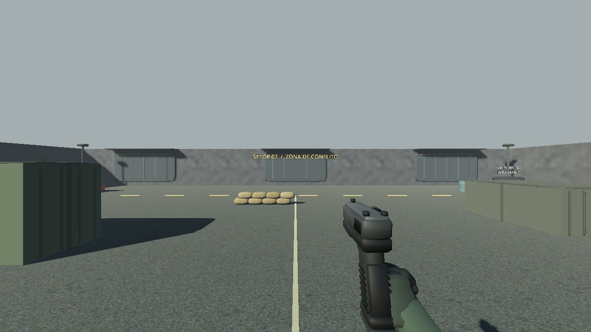
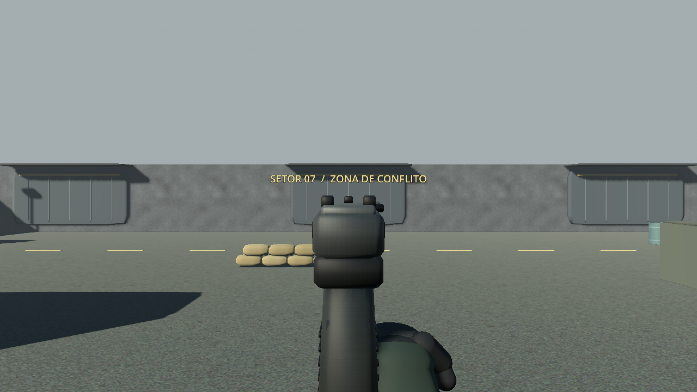
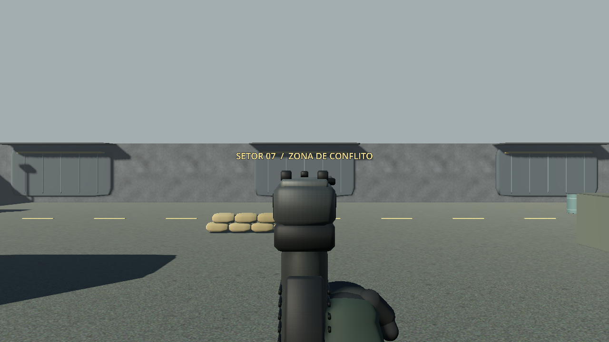
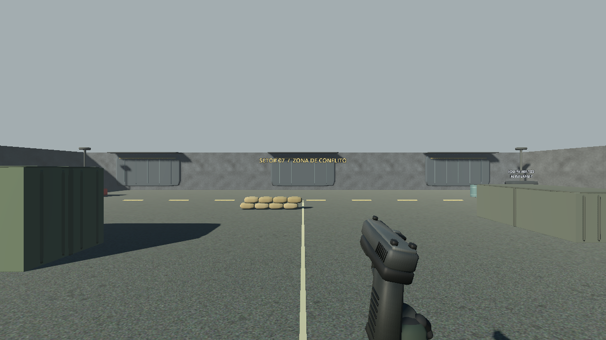
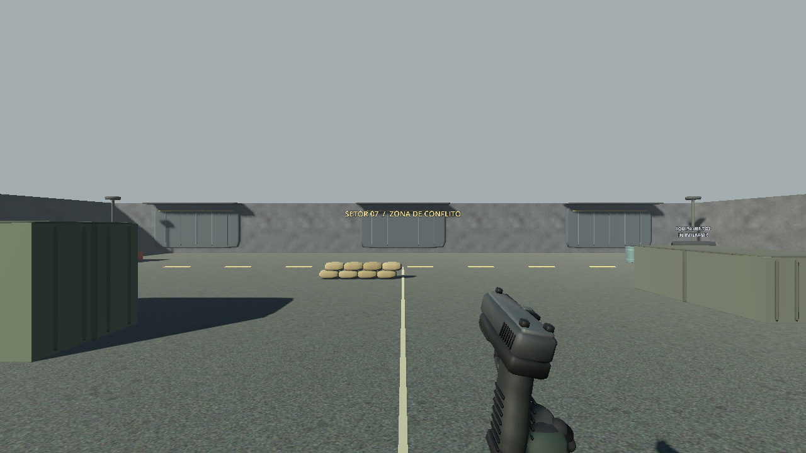

02-01 — Godot real — pistol repouso/ADS/recarga
02-01 — viewmodel de produção no Godot 4.4.1 Compatibility
main.tscn real, câmera do jogador, 1280×720, renderer opengl3, AMD Radeon iGPU · esquerda = HEAD, direita = fonte híbrida
Antes — repouso
Depois — repouso
Antes — ADS
Depois — ADS
Antes — recarga (50%)
Depois — recarga (50%)